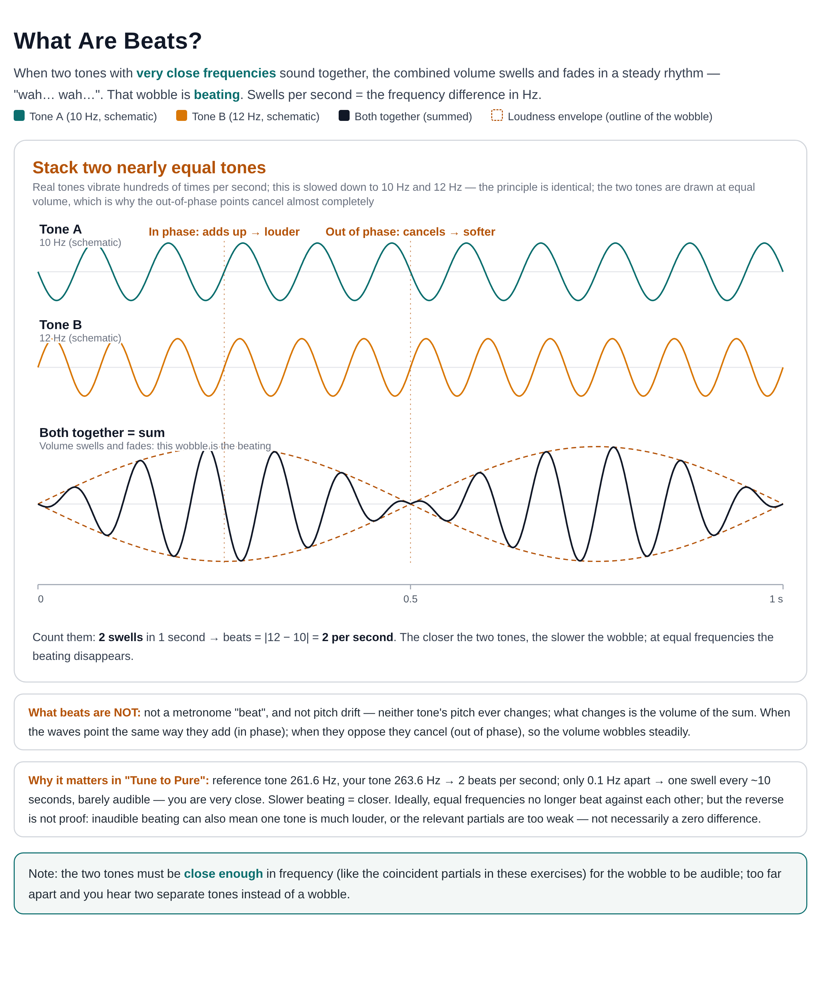
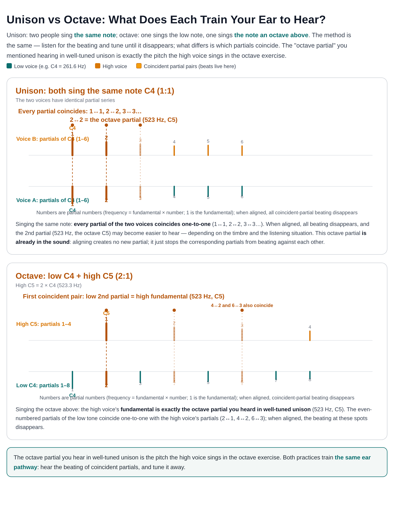
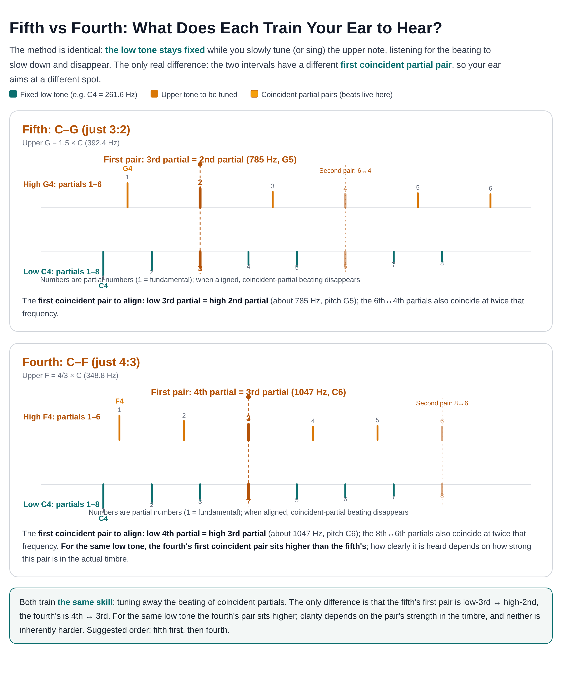

Tune to Pure — User Manual
Practice Room · Just-intonation ear training
What this is
A just-intonation ear trainer built on one idea: listen for the beats, tune until they are gone. A reference tone keeps sounding, and you tune (or sing) another tone until it locks in — when you are aligned the beats are gone — though inaudible beats can also come from a volume imbalance or weak partials, not only from a zero frequency difference. Four practices: Unison (1:1), Octave (2:1), Fifth (just 3:2), and Fourth (just 4:3). Two ways to play: Slider tuning (no microphone) and Sing it (microphone, real singing).
The idea, in three figures
Principle first, practice second: what beats are → which partials align in unison and octave → which partials align in fifth and fourth. All three figures are white-background and print-friendly.



Beats vs cents
A cent is a unit for measuring pitch differences: one semitone is divided into 100 equal parts, and each part is 1 cent; one octave = 12 semitones = 1200 cents. It is a relative distance: the same 5 cents is a different actual frequency difference (Hz) on a low note than on a high note.
Beats count how many times per second the combined volume wobbles — equal to the difference in Hz between two very close frequencies (such as a coincident partial pair), an actual audible wobble. The same 1 beat per second converts to a wider cents band on low notes and a narrower one on high notes — This app's pass standard for singing is the tolerance band: at least 70% of your singing time must stay inside the green band (±cents, default ±15, adjustable 5–200 in advanced settings) — inside the band counts as in tune, outside as off; when practicing, still judge mainly by ear using the beats. Cents tell you how far off the result was: the slider-mode verdict, and the pitch line's scale and tolerance band, are all in cents. The slider pass tolerance is ±2 cents, about 1/50 of a semitone.
For example: a just fifth (3:2) is about 702 cents, while a piano's equal-tempered fifth is 700 cents — a difference of about 2 cents. That is why just intonation is tuned by ear with beats, not by matching a piano.
Quick start (slider tuning)
- "Pick a practice": Unison, Octave, Fifth, or Fourth.
- "Pick a note": first a range (Low C2–B2 · very low, Mid C3–B3 · bass, High C4–G4 · shared), then a note name (the highest range goes up to G4 only).
- Press "Start listening": the reference tone keeps sounding.
- Drag the slider to tune the second tone; hear the beating slow down until it disappears. The − ＋ buttons beside the slider fine-tune.
- Press "Confirm" for the verdict: how many cents you are off (a cent is 1/100 of a semitone); within ±2 cents counts as aligned.
- Compare with the "Your answer" / "Correct answer" buttons, then press "Again" to continue.
What the three practices train
Each practice aligns a different set of partials. Partial number = how many times the fundamental frequency; the 1st partial is the fundamental itself:
| Practice | Just ratio | The note you tune/sing | First coincident partial pair |
|---|---|---|---|
| Unison | 1:1 | Same as the reference | Every partial coincides (1↔1, 2↔2, 3↔3…) |
| Octave | 2:1 | One octave above the reference | Low 2nd partial = high 1st partial (fundamental); 4↔2, 6↔3 also coincide |
| Fifth | 3:2 | A just fifth above the reference | Low 3rd partial = high 2nd partial; 6↔4 coincide at twice that frequency |
| Fourth | 4:3 | A just fourth above the reference | Low 4th partial = high 3rd partial; 8↔6 coincide at twice that frequency |
Beats are the "wah-wah" wobble when two very close frequencies sound together; in these exercises you listen for the beating between the coincident partials. The closer you get, the slower the wobble; when perfectly aligned it disappears. How clearly a coincident pair is heard depends on how strong that pair is in the actual timbre; the fourth's first pair sits higher than the fifth's, so if it is hard to catch at first, practice the fifth first.
Level balance (slider mode, fifth): in the fifth practice, the tone you adjust (the target tone) plays about 4 dB quieter than the fixed tone. The overtone mix is unchanged. Unison, octave and fourth keep their levels, and so does Sing mode. This only changes how it sounds; scoring is the same.
How slider scoring works
- Within ±2 cents counts as "fully aligned"; otherwise you are told how many cents sharp or flat you are.
- The slider's zero point is randomized each round (and never sits dead center), so you train your ear, not your memory of slider positions.
Sing it (real singing with a microphone)
- Press "Turn on microphone" and allow access; wait for "Microphone ready".
- Press "Start singing": listen to the reference tone first, then sing the practice's target note (unison = same note, octave = an octave above, fifth = a just fifth above, fourth = a just fourth above).
- Measuring starts only when your voice is detected; there is no time limit. Press "Stop" when you are done to see the result.
- Your voice is sent live into your headphones, mixed with the reference tone, so you can hear the beating: judge mainly by ear: ideally the beating disappears exactly when you are in tune — but inaudible beating can also mean a volume imbalance or weak partials, so when in doubt, turn on the pitch line to check.
- Scoring: from your first sung note to Stop, you pass when at least 70% of the time your pitch stays inside the tolerance band (the green band, default ±15 cents; the first ~0.3 seconds after you start are not scored). Inside the band counts as in tune, outside as off; the band width and the pass ratio can be changed in Advanced settings.
- Diagnostic report: after singing, press "Diagnostic report" to download a plain-language PDF report: whether you passed, how long you sang, how much was in tune / sharp / flat, and whether capture and detection had problems, with suggestions. If there is too little data it says so; detailed numbers are in a small appendix at the end.
- Pitch line (off by default): turn on "Show pitch line" for a visual aid — the center line is the target note, the faint band is the tolerance; your pitch above the line = sharp, below = flat, green while inside the band. Turn it off to practice by ear alone.
Advanced settings (optional)
In "Sing it" mode, expand "Advanced settings (optional)". Line smoothing only changes how the line looks — scoring always uses the raw pitch, so smoothing never makes passing easier; the allowed range and pass ratio change the scoring standard. You can change them while singing; the result at Stop uses the settings at that moment. Settings last only while the page is open: reloading the page or pressing "Reset to defaults" restores the defaults.
Allowed range
The half-width of the green tolerance band in cents (default ±15, adjustable 5–200 in steps of 5): inside the band counts as in tune, outside as off — the green band you see IS the scoring standard. The pitch-line chart always shows at least ±100 cents above and below the target and widens automatically for larger tolerances.
Line smoothing
Options (drop-down):
- 3 points (default): the median of the current reading plus the 2 most recent voiced readings (3 in total). Reasonably stable yet still responsive to pitch changes; recommended for most use.
- 5 points: the median of the current reading plus the 4 most recent voiced readings. The line is steadier and less jittery, but reacts more slowly when your pitch changes.
- Off (= 1 point): no smoothing; every raw reading is drawn, so you see the true small fluctuations.
- Your pitch is analyzed every 0.05 seconds (about 20 readings per second). Only voiced readings count toward the smoothing window; silent or undetected stretches are skipped, not averaged in.
- The window uses the median, not the average, so an occasional stray reading does not pull the line off course.
- This setting only affects how the line is drawn; it does not affect scoring. Scoring always uses the raw pitch, so smoothing never makes passing easier.
- Boundary exception: if smoothing would pull a point to the wrong side of the green band, that point is drawn at its raw position instead, so the line enters and leaves the band exactly when the verdict does; away from the boundary the line is smoothed as usual.
- The setting lasts only while the page is open: reloading the page or pressing "Reset to defaults" restores the default of 3 points.
- The pitch line itself is off by default ("Show pitch line" unchecked); the smoothing setting applies only once the line is shown.
Pass ratio
Default 70%, adjustable 50–95% (in steps of 5%): from onset to Stop, this fraction of your singing must be within tolerance to pass.
Privacy and devices
- Slider tuning needs no microphone — just a browser that can play sound; Sing it needs a microphone (headphones recommended).
- All sound analysis happens on your own device, inside this web page; nothing is uploaded anywhere.
- Latest Chrome, Edge or Safari recommended.
Version and license
- App version: v2.7 (2026-10; fifth slider target tone -4 dB)
- Made by Taiwan Choral Music Center · Practice Room
- CC BY-NC 4.0 · teachers and educators may use it for teaching, demonstration and student practice, whether or not the course charges a fee; see tcmctw.github.io